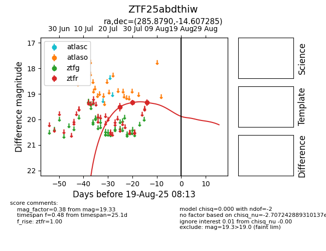

Target ZTF25abdthiw at 2025-08-19 09:59, see:
FINK: fink-portal.org/ZTF25abdthiw
Lasair: lasair-ztf.lsst.ac.uk/objects/ZTF25abdthiw
ALeRCE: alerce.online/object/ZTF25abdthiw
alt names
ZTF25abdthiw (ztf,fink)
coordinates:
equatorial (ra, dec) = (285.8790,-14.60729)
galactic (l, b) = (21.1701,-9.22786)
photometry
last ztfr=19.33
3 ztfr detections
